African Cichlids are colorful, territorial fish native to African lakes like Lake Malawi. They thrive in stable, well-maintained tanks with slightly alkaline, hard water. Lifespan: 8 to 15 years.
Redspotted Severum 7"
Price: ₹1,200.00
The Redspotted Severum is a vibrant freshwater cichlid known for its bright green body and distinct red spots. Lifespan: 10 to 15 years. Ideal pH: 6.5 to 7.5.
Black Berry Dollar 3-4"
Price: ₹850.00
A striking freshwater fish with deep black body and metallic, iridescent spots. Lifespan: 5 to 7 years. Ideal pH: 6.5 to 7.5.
Clown Loaches 4"
Price: ₹600.00
Known for their orange and black stripes, Clown Loaches are lively and social. Lifespan: Up to 12 years. Ideal pH: 6.0 to 7.5.
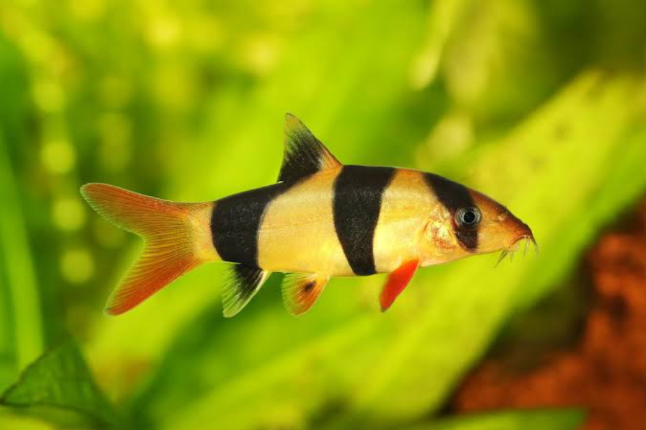
Clown Loaches 2-3"
Price: ₹300.00
Known for their orange and black stripes, Clown Loaches are lively and social. Lifespan: Up to 12 years. Ideal pH: 6.0 to 7.5.
Frontosa Burundi 2-3"
Price: ₹1,500.00
Known for its unique hump and striking appearance, the Frontosa Burundi thrives in large tanks. Lifespan: Up to 20 years. Ideal pH: 7.5 to 9.0.
Frontosa Burundi 2"
Price: ₹450.00
Known for its unique hump and striking appearance, the Frontosa Burundi thrives in large tanks. Lifespan: Up to 20 years. Ideal pH: 7.5 to 9.0.
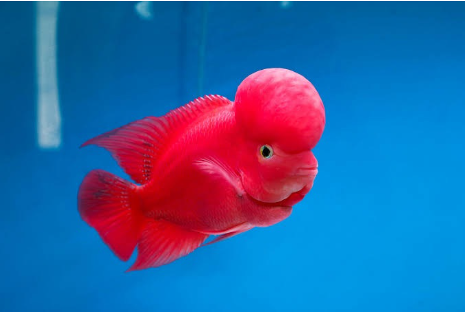
Super Red Monkey Fries 2-3"
Price: ₹1,500.00
Description: The Super Red Monkey Fries is a captivating freshwater fish known for its vibrant red coloration and playful nature. Ideal for aquarists looking for a lively addition to their tank, these fish thrive in groups and require ample space and hiding spots. They are generally peaceful but can exhibit territorial behavior during breeding.
pH: Ideal pH range is 6.5 to 7.5, with slightly acidic to neutral water. Size: Can grow up to 5 inches (12.7 cm) in length as adults. Lifespan: Typically lives 3 to 5 years with proper care.
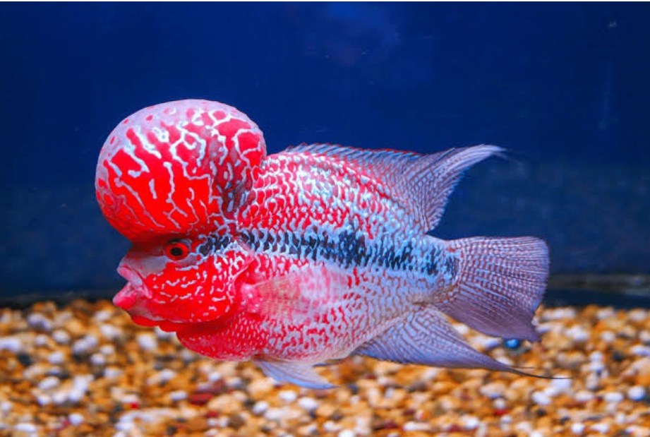
SRD Flowerhorn 4" AAA Grade Monster KOK
Price: ₹1,800.00
Description: The SRD Flowerhorn is an exquisite freshwater fish, celebrated for its vibrant coloration and distinctive head shape. This AAA Grade specimen features a prominent KOK, making it a showpiece in any aquarium. Known for its strong personality, the Flowerhorn thrives in a spacious environment with plenty of hiding spots. They are territorial and can be aggressive, especially during breeding.
pH: Ideal pH range is 6.0 to 7.5 for optimal health. Size: Can reach up to 12 inches (30 cm) as adults. Lifespan: Typically lives 10 to 12 years when cared for properly.
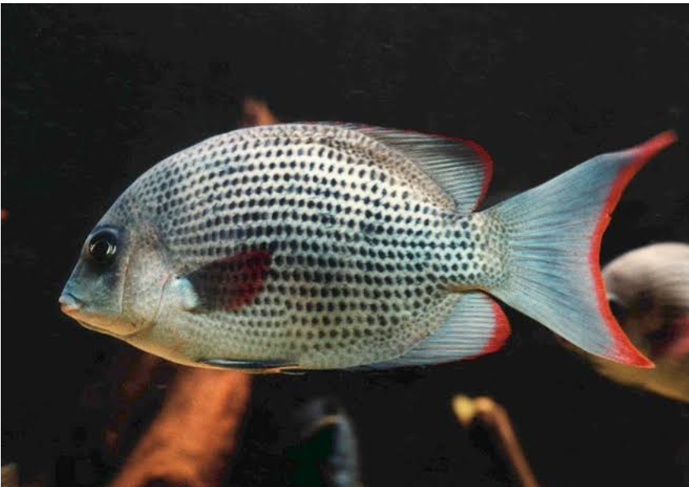
Menerambo 4"
Price: ₹1,200.00
Description: The Menerambo, also known as the Menerambo Cichlid, is a vibrant freshwater fish favored for its striking appearance and lively behavior. Typically found in rivers and lakes, they enjoy spacious tanks with plenty of decorations and hiding spots. Menerambos are known for their social nature and can be kept in groups, but care should be taken to monitor aggression levels, especially during breeding.
pH: Ideal pH range is 6.5 to 7.5. Size: Can grow up to 6 inches (15 cm) as adults. Lifespan: Typically lives 5 to 8 years with proper care.
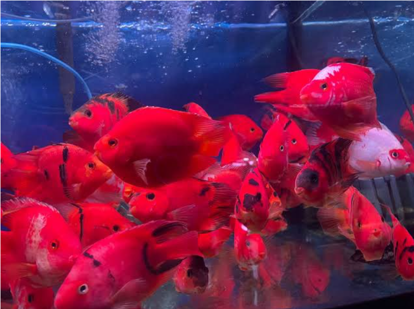
Red Tiger 6"
Price: ₹1,800.00
Description: The Red Tiger is a striking freshwater fish renowned for its vibrant coloration and active nature. With a penchant for spacious environments, it thrives in well-maintained tanks with ample swimming space and hiding spots. Typically social, Red Tigers can be kept with other compatible species; however, be mindful of their territorial tendencies during breeding seasons.
pH: Ideal pH range is 6.0 to 7.5. Size: Can grow up to 8 inches (20 cm) as adults. Lifespan: Generally lives 5 to 7 years with proper care.
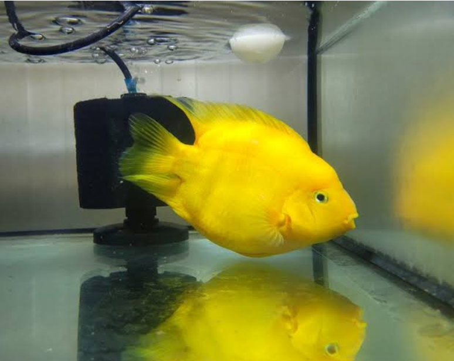
Yellow Yuan Bao Parrot 5"
Price: ₹1,650.00
Description: The Yellow Yuan Bao Parrot is a beloved freshwater fish, known for its unique shape and vibrant yellow coloration. These fish are characterized by their round bodies and beak-like mouths, resembling a parrot. They thrive in well-planted tanks with ample space to swim. Although generally peaceful, they can exhibit territorial behavior, so it's best to house them in a spacious aquarium.
pH: Ideal pH range is 6.5 to 7.5. Size: Typically grow up to 6 inches (15 cm) in length as adults. Lifespan: Can live 8 to 10 years with proper care and maintenance.
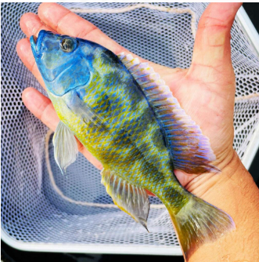
Venus Cichlid 5"
Price: ₹250.00
Description: The Venus Cichlid is a beautiful freshwater fish known for its vibrant colors and unique patterns. They thrive in well-maintained aquariums with plenty of hiding spots and territories.
Lifespan: 6-10 years, depending on conditions. Maximum Size: Varies by species, but can reach up to 5 inches (13 cm). Ideal Temperature: 24-28°C (75-82°F). Country of Origin: Primarily found in African lakes.
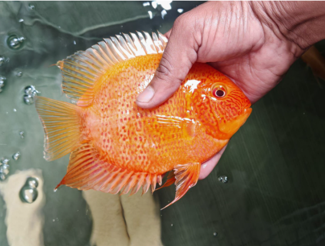
Severum Cichlid 7"
Price: ₹1,200.00
Description: The Severum is a South American cichlid known for its laterally compressed, oval-shaped body and vibrant colors. They come in various color morphs, including green, gold, and red. They are relatively peaceful compared to other cichlids but can be territorial, especially during breeding. Lifespan: 10–15 years with proper care. Maximum Size: 8–10 inches (20–25 cm) in captivity. Ideal Temperature: 24–28°C (75–82°F). Country of Origin: South America, primarily found in the Amazon River basin in Brazil, Venezuela, and surrounding regions.
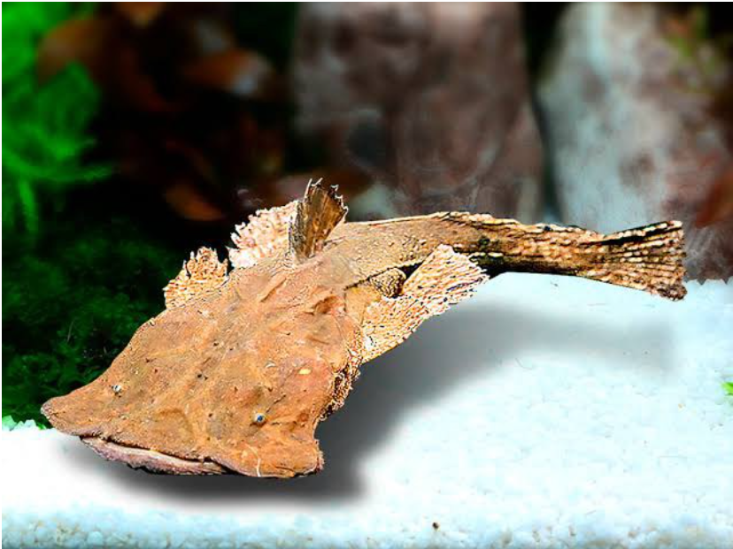
Frog Mouth Catfish 4-7"
Price: ₹350.00
Description: The Frog Mouth Catfish, known for its unique appearance resembling a frog's mouth, is a peaceful bottom dweller that adds interest to community aquariums.
pH: Ideal pH range is 6.5 to 7.5.
Size: Currently available size varies from 4 to 7 inches (10-18 cm).
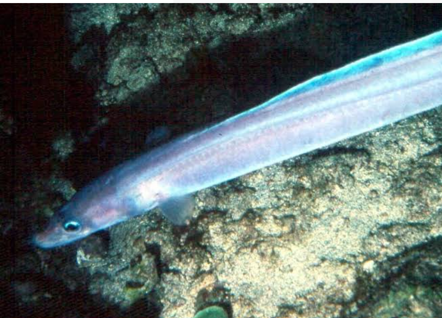
Hi-Fin Conger Eels 12-14"
Price: ₹1,500.00
Description: Hi-Fin Conger Eels are known for their elongated bodies and graceful movements. They make interesting pets for aquarists who understand their specific habitat requirements.
pH: Ideal pH range is 7.0 to 8.5.
Size: Currently available sizes are between 12 to 14 inches (30-35 cm).
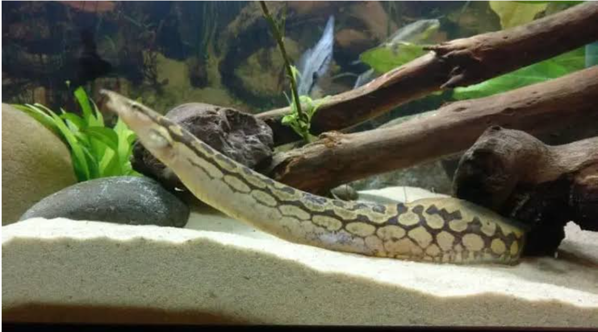
Tye Track Eel 10"
Price: ₹800.00
Description: The Tye Track Eel is a fascinating species, known for its striking coloration and patterns. It thrives in a well-maintained aquarium with plenty of hiding spots.
pH: Ideal pH range is 6.5 to 7.5.
Size: Currently available size is 10 inches (25 cm).
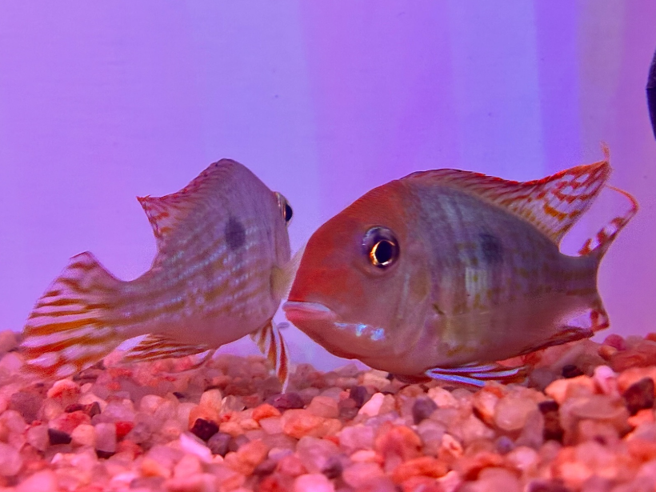
Imported Red Head Tapajos 4"
Price: ₹600.00
Description: The Imported Red Head Tapajos is a stunning cichlid known for its vibrant red coloration and unique patterns. This fish is suitable for aquarists looking to add some color to their tanks.
pH: Ideal pH range is 6.5 to 7.5.
Size: Currently available size is 4 inches (10 cm).
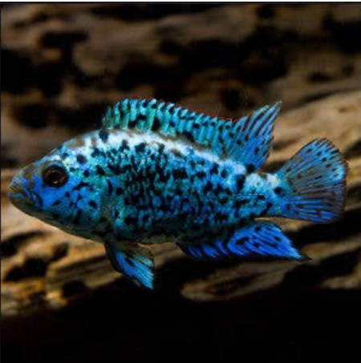
Electric Blue Jack Dempsey 2"
Price: ₹450.00
Description: The Electric Blue Jack Dempsey is a smaller variety of the popular cichlid, known for its striking electric blue coloration and bold personality. A great addition for any freshwater tank.
pH: Ideal pH range is 6.5 to 7.5.
Size: Currently available size is 2 inches (5 cm).